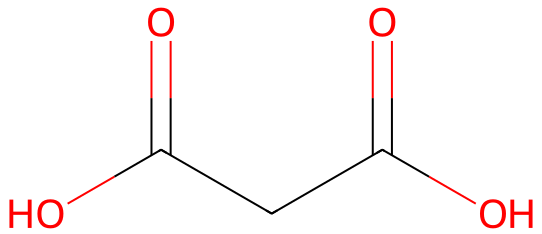

令和元年度 問3 有機化学及び燃料
一般的な炭素－炭素結合形成方法の1つであるエノラートイオンのアルキル化反応に関する次の記述のうち、最も適切なものはどれか。
①
α炭素上に水素原子を持つカルボニル化合物は、相当するエノール異性体と速い速度で平衡にあり、両者の求核反応性はエノラートイオンと同程度となる。
②
アルキル化は、求核性のエノラートイオンが求電子性のアルキル化試薬R-Xと反応し、S N 1型の攻撃によって脱離基Xを置換して行われる。
③
アルキル化試薬R-Xのアルキル基（R）は第一級か、メチル基である必要があり、アリル型又はベンジル型であればより好都合である。
④
アルキル化試薬R-Xの脱離基Xとしては、OH – 、NH 2 – 、RO – のような、強い塩基となるものが適当である。
⑤
マロン酸エステル合成ではハロゲン化アルキルから炭素鎖を2つ伸ばしたメチルケトンが得られる。
正答
③ アルキル化試薬R-Xのアルキル基（R）は第一級か、メチル基である必要があり、アリル型又はベンジル型であればより好都合である。
カルボニル基の隣にある炭素はα炭素、α炭素に結合した水素はα水素と呼びます。強塩基が作用するとカルボニル化合物のα水素が脱離します。脱離により生成したアニオンがエノラートイオン（エノラート）です。エノラートの負電荷はカルボニルの酸素原子にも非局在化するため安定化します（R-C=C(-O–)-R⇔R-C–-C(=O)-R）。
1番のエノールは、エノラートのO–にプロトンが付加しOHとなったものです。エノールはアルデヒドやケトンの異性体（互変異性体）です。エノールと比べてエノラートには負電荷があるため、より強い求核試薬として振舞います。
2番のエノラートとアルキル化試薬（R-X）との反応は、SN1反応ではなくSN2反応です。SN2反応は1級炭素であると起こりやすく3級炭素では起こりません。そのため3番にあるように第一級や、メチル基が用いられます。
4番の脱離基は強い酸、つまりpKaが低い酸であるほど優れた脱離基としてはたらきます。これは脱離後の状態がCl–のように共役塩基の状態であるためです。そもそも酸性の強さは共役塩基の安定性が高いかどうかで判断されます。つまり強い酸であるほど共役塩基（脱離基）の安定性が高く脱離しやすいことを示します。
5番のマロン酸エステル合成は、マロン酸エステルのようなジカルボン酸に挟まれた活性の高いα炭素をもつ化合物によるエステルの合成反応です。ジカルボン酸に挟まれたα炭素にハロゲン化アルキル由来のアルキル基が置換し、エステルの加水分解、脱炭酸を経てα炭素にアルキル基が置換したモノカルボニル化合物が得られます。
